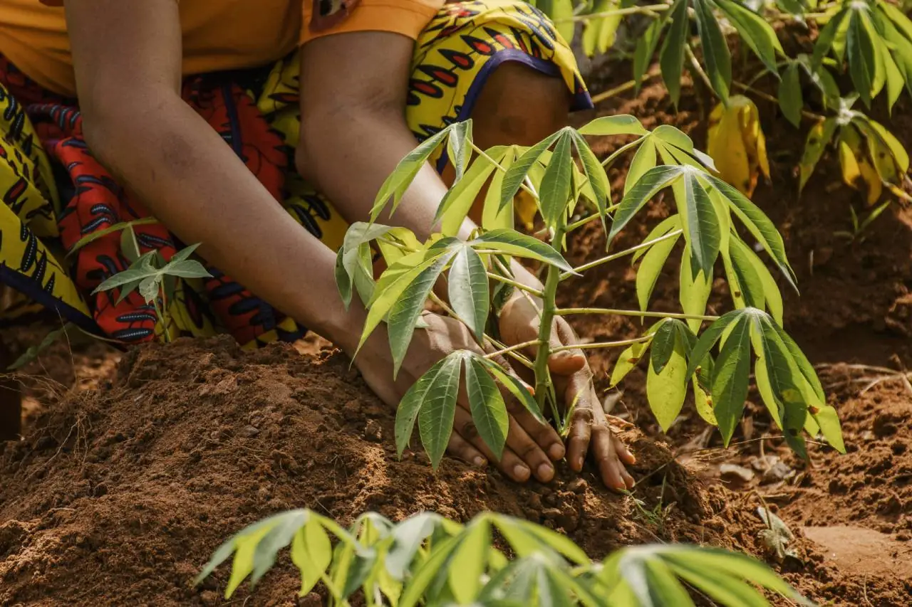

O Propósito
O Distrito Federal possui uma diversidade agrícola imensa, mas este guia concentra seus esforços onde o impacto é imediato.
Selecionamos as 10 principais hortaliças produzidas na região — como o tomate, a alface, o pimentão e a mandioca — que representam a maior parte da renda e do trabalho dos nossos pequenos produtores.
Focar nessas culturas nos permite entregar um conteúdo profundo e útil, baseado em dados da EMATER-DF e tendências para 2025–2026.

O Abismo de Informação
Muitas vezes, o conhecimento técnico está confinado em artigos complexos ou consultorias caras. Essa barreira gera dependência de soluções paliativas e uso inadequado de insumos no campo.
Simplicidade Estrutural
Optamos por um Microsite Estático focado na realidade rural:
Extensão Universitária e Impacto Social
Desenvolvido no curso de Análise e Desenvolvimento de Sistemas (ADS). Transformamos código em produtividade, garantindo suporte direto ao pequeno agricultor do DF.